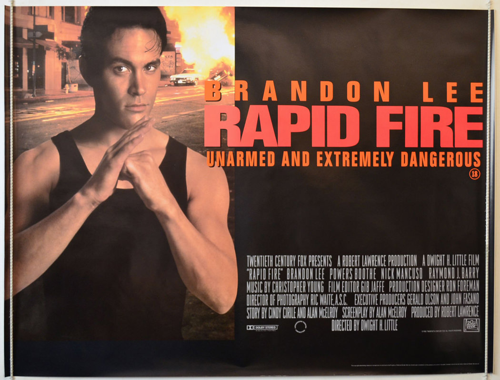

Après Showdown in Little Tokyo, j'ai continué à chercher.
La filmographie de Brandon Lee n'est pas longue. Quelques films, quelques années, et puis The Crow — et le silence.
Rapid Fire est arrivé avant The Crow. Un an avant.
Cette fois il est seul. Pas de Lundgren à côté de lui, pas de partenaire pour partager le poids du film. Juste lui, premier plan, tête d'affiche.
95 minutes pour prouver ce qu'il valait.
En regardant ce film, j'ai pensé à tout ce qu'on n'a pas eu le temps de voir.
Ce soir, on prend le temps.

Rapid Fire.
1992. Réalisé par Dwight H. Little — le même qui avait dirigé Marked for Death avec Seagal deux ans plus tôt. Avec Brandon Lee.
Un film produit par la Fox, sorti en salles aux États-Unis avec une distribution correcte. Pas un direct-to-video. Une vraie tentative de lancer Brandon Lee comme star d'action à part entière.
La jaquette promettait de l'action, Chicago, un jeune homme contre la pègre.
Ce qu'on trouve à l'intérieur est plus intéressant que la promesse. Un acteur qui n'a plus besoin de partager l'écran pour exister. Un film qui lui appartient entièrement.
Et qui prouve, 95 minutes durant, qu'il était prêt.
1992.
Brandon Lee a 26 ans. Depuis Showdown in Little Tokyo, quelque chose a changé. Les producteurs commencent à le regarder différemment — pas comme le fils de Bruce Lee qui cherche sa voie, mais comme un acteur qui pourrait porter un film seul.
La Fox fait le pari. Rapid Fire est une vraie production studio, avec un budget correct, une distribution nationale, et Brandon Lee en haut de l'affiche sans personne pour partager la vedette.
Dwight H. Little est aux commandes. Un réalisateur solide, efficace, qui sait construire une séquence d'action sans gaspiller de pellicule. Il avait fait ses preuves avec Marked for Death — un film brutal, tendu, qui avait confirmé Seagal comme star du genre.
Avec Brandon Lee il prend un pari différent. Pas un colosse invincible. Un jeune homme agile, charismatique, capable de jouer la vulnérabilité autant que la puissance.
Le film sort en juillet 1992. Il fait des entrées honorables, reçoit des critiques correctes, et disparaît rapidement de l'actualité.
Un an plus tard, Brandon Lee est mort sur le tournage de The Crow.
Et Rapid Fire est devenu autre chose — le dernier film où on le voit vivant, entier, au sommet de ce qu'il construisait.

Jake Lo est étudiant aux Beaux-Arts à Chicago.
Un jeune homme ordinaire, sans histoire — jusqu'au jour où il est témoin involontaire d'un meurtre lié à un réseau de trafiquants de drogue qui fait le lien entre la mafia italienne et les triades chinoises.
Il se retrouve pris en étau entre deux organisations criminelles qui veulent le faire taire, et une DEA qui veut l'utiliser comme appât.
Ce qui aurait pu être un thriller d'action générique devient quelque chose de plus personnel entre les mains de Brandon Lee. Jake Lo n'est pas un soldat, pas un flic, pas un mercenaire. C'est un civil propulsé dans un monde qui le dépasse, qui doit trouver en lui des ressources qu'il ne savait pas avoir.
Cette fragilité initiale — et la façon dont elle se transforme — c'est ce qui rend le film intéressant.
Chicago comme terrain de jeu. Des poursuites dans des entrepôts, des ruelles, des appartements. De l'action physique, réelle, sans filet.
Ce qui frappe dans Rapid Fire, c'est la légèreté.
Pas la légèreté du film — la légèreté de Brandon Lee. Sa façon de bouger, de parler, d'occuper l'espace. Il n'essaie pas d'être impressionnant. Il n'essaie pas d'être son père. Il est simplement là, présent, naturel, avec une aisance qui rend tout ce qui l'entoure plus crédible.
Dans Showdown in Little Tokyo il était le complice — le contrepoids ironique à la sobriété de Lundgren. Ici il est seul. Et on réalise que ce qu'on prenait pour de la légèreté était en réalité quelque chose de plus rare — une présence qui n'a pas besoin de forcer pour exister.
Les scènes d'action confirment ce qu'on pressentait. Brandon Lee se bat comme quelqu'un qui a grandi avec ça dans le sang — fluide, précis, économe. Pas de gesticulation inutile. Pas de ralentis complaisants. De l'efficacité pure, héritée d'un nom qu'il portait sans s'en servir comme béquille.
Rapid Fire est le film où Brandon Lee prouve qu'il n'avait plus besoin de prouver quoi que ce soit.
C'est pour ça que le silence qui suit est si lourd.
Rapid Fire n'a pas été oublié pour les mêmes raisons que les autres films de SOMEDAY.
Il n'a pas raté son public. Il n'est pas arrivé au mauvais moment. Il n'a pas été victime d'un marketing raté ou d'un studio qui ne croyait pas en lui.
Il a été oublié parce que The Crow est arrivé.
Quand Brandon Lee est mort en mars 1993 sur le tournage de The Crow, tout ce qui avait précédé a été absorbé par l'événement. The Crow est sorti en 1994, est devenu un phénomène, une icône, un symbole. Et dans l'ombre de ce symbole, Rapid Fire a disparu.
Pas parce qu'il était mauvais. Pas parce que personne ne l'avait vu. Mais parce que The Crow avait tout aspiré — la mémoire, l'attention, la place dans l'histoire.
Rapid Fire est devenu une anecdote dans la biographie d'une icône.
Alors qu'il méritait d'être le début d'une grande carrière.
Parce que Brandon Lee n'était pas seulement une icône.
Il était un acteur. Un vrai. Avec une technique, une présence, une intelligence du jeu que Rapid Fire documente mieux que n'importe quel autre film de sa courte filmographie.
The Crow est un chef-d'oeuvre du genre. Mais il est aussi un rôle — un personnage construit, gothique, habité par la tragédie réelle de sa mort. Ce qu'on voit dans The Crow c'est Brandon Lee transfiguré par les circonstances.
Ce qu'on voit dans Rapid Fire c'est Brandon Lee lui-même.
Léger. Vivant. En train de construire quelque chose.
Il avait 26 ans. Il venait de prouver qu'il pouvait porter un film seul. Il avait devant lui une carrière entière à écrire.
Regarder Rapid Fire aujourd'hui c'est voir un homme à l'orée de ce qu'il aurait pu devenir.
C'est douloureux.
Et c'est exactement pour ça qu'il faut le voir.
Rapid Fire n'est pas le meilleur film de Brandon Lee.
C'est peut-être le plus important.
Parce que c'est celui où il était libre. Sans le poids d'un partenaire, sans le poids d'une mort imminente, sans le poids d'une légende à porter ou à fuir. Juste un jeune homme de 26 ans qui faisait exactement ce pour quoi il était fait.
Il nous a quittés trop tôt.
SOMEDAY ne peut pas changer ça.
Mais on peut au moins regarder ce qu'il a laissé derrière lui avec l'attention qu'il méritait.
La cassette est dans le lecteur. On rembobine.
Titre original
Rapid Fire
Pays
États-Unis
Genre
Action / Thriller
Durée
95 min
Producteur
20th Century Fox
Avec aussi
Powers Boothe · Nick Mancuso
Fil conducteur
Brandon Lee — Saison 1
Regarder l'épisode
SOMEDAY — EP. 04